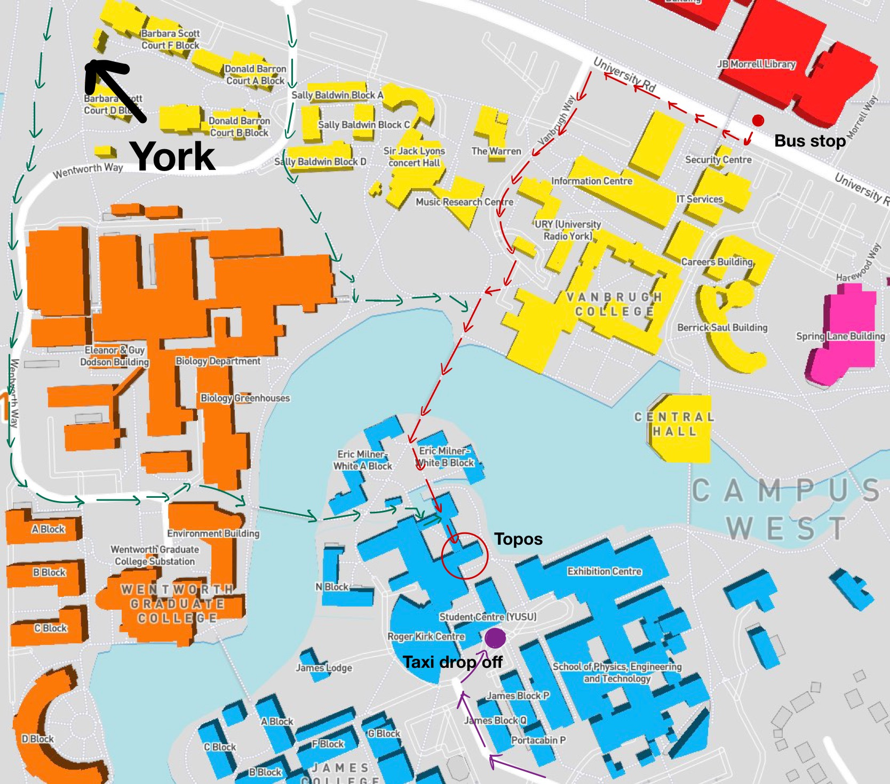

Back to homepage
Directions to University of York Maths Department

The maths department is in James College on the west campus. The main meeting point (also the seminar room) is the "Topos" marked on the map to the right.
You can also search for the location on the University campus map (this includes a link to an interactive campus map).
Bus.
Exit the station and catch bus #66 or #67. These buses come approximately every 10 minutes, take 17 minutes to reach the campus, and cost approximately £2 for a one-way ticket (pay the driver). Exact change is not necessary, and you can use your credit card.
Once the bus reaches campus, the best stop is the "University Library" stop near the first footbridge across the road. Then cross the road, walk downhill, and cross the lake following the red arrows on the map.
Walking.
Walking to campus through the city centre takes about 40 minutes from the rail station. Once you reach campus then follow the green arrows on the map to reach the maths department.
Car. Pay and Display parking is marked on the campus map. If you are planning to arrive by car then please contact us to arrange a visitor's permit.
Last updated 27 August, 2024